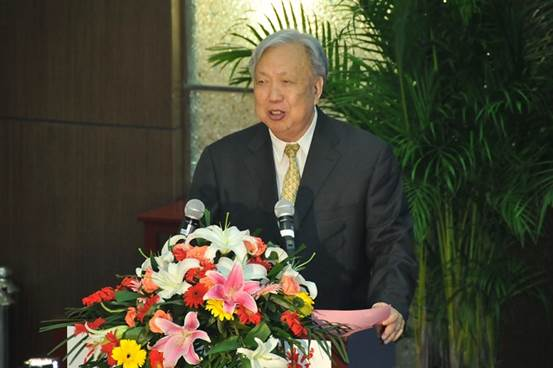

信息科学与工程学院
2012年度工作十大亮点
1、成功举办2012国际水中机器人大赛并夺得一项冠军一项亚军，央视新闻频道报道了大赛消息。
2、校企合作深入开展
- 12月28日我院计算机系与江苏爱信诺航天信息科技有限公司在5年友好合作基础上，又签订了全面深入合作协议，该公司将与我院共建科技创业园，合作科研研发项目----300万元并在金陵学院设立50万元的教师科研创业奖和学生奖学金
- 本学期南京联通公司在2011年合作共建现代通信技术实验室基础上又投入300万的华为公司最新研发的软交换设备
3、专业建设取得新进展
- 完成计算机科学与技术专业申报江苏省高校重点专业的申报工作
- 完成信息管理与信息系统专业的申报工作
- 机电工程专业实验室筹建工作启动
- 2012江苏省服务外包工作汇报交流大会召开，叶保留 主任大会发言
- 2013年全国独立学院计算机专业建设经验交流大会确定由我院承担
4、我院学生代表队荣获2012全国大学生数学建模竞赛本科组江苏赛区二等奖 这是继机器人大赛获奖后的又一突破
5、袁杰老师所带学生毕业论文荣获2011年度江苏省普通高校优秀毕业论文二等奖
6、卢莎获金陵学院2012教学竞赛一等奖，一批青年教师正成为教学的主力军。
7、2012年我院青年教师发表论文30篇
8、学术交流活跃
- 中科院院士、航天部502所研究员、中国自动化学会副理事长吴宏鑫学术报告
- 中国自动化学会机器人竞赛工作委员会主任、清华大学教授朱纪宏博士报告
- 与商学院联合举办跨学科学术交流报告会两场：英国ESSEX大学金融学教授ANDREW 博士、计算机金融学教授。。。博士作计算金融报告
- 加拿大罗里尔大学教授原南京大学教授作双语教学培训讲座

9、我院考研录取比率连续4年全校第一，今年又有71名学生考取了国内外名牌大学研究生。连续4年超过15%的学生考取研究生。
10、创先争优深入开展，总支工会工作开展富有朝气：
- 教师党支部发展预备党员2人，转正2人；学生党支部发展预备党员105人，转正73人
- 组织大型“和谐校园知识竞赛”主题活动，原创作者黄似培老师通读学生守则和学校各项规章制度，带上照相机和笔记本跑遍校园每一个角落出了150多道题，保证了活动的圆满完成。南大组织部网站报道了活动
- 分院首次举办优秀学生党员表彰大会，他们努力学习、创先争优在各项工作中发挥了先锋模范作用
工会积极组织青年教师参加南大教职工运动会、文艺汇演、春（秋）游，获得好评
信息科学与工程学院
2012-12-29